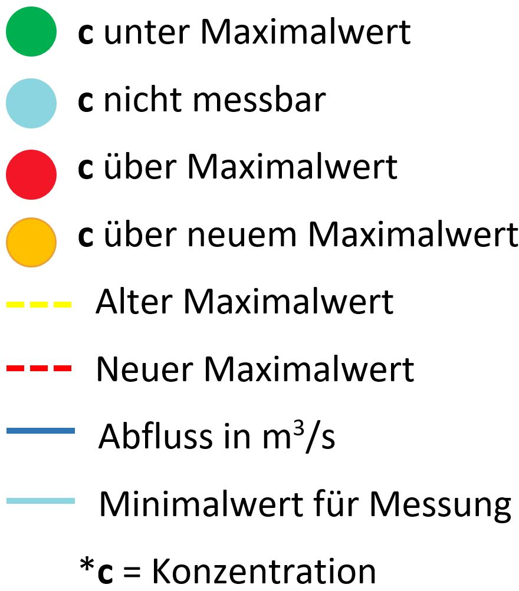

Story
Die Schweiz gilt als ein Land mit sehr sauberem und qualitativ hochwertigem Wasser. Dass man Wasser einfach vom Wasserhahn trinken kann, ist ein Privileg, um welches Schweizerinnen und Schweizer froh sind. Naheliegend ist folglich auch, dass man zu diesem Privileg Sorge tragen sollte. In Schweizer Gewässern werden deshalb regelmässig Proben entnommen. Die Messungen der RÜS, der Messstation des Rheins vor der Grenze zu Deutschland, werden in der App visualisiert, um einen Überblick zu verschaffen.
Im Rahmen der Vorlesung "Open Data" wollten wird deshalb eine App entwickeln, die Pestizidkonzentrationen im Rhein abbildet.
Die App
In der App können nun die Messungen der Pestizidkonzentrationen von 2013 bis 2017 nach der Messmethode "ORBITRAP_GROSS_ENVI_669_AS" mit den Höchstwerten nach bisherigem und neuem Reglement (welches bisher nur als Entwurf besteht) verglichen werden.
Der Nutzer kann in einem ersten Schritt mit einem Klick auf eine von drei Punkten, die die Anzahl in einer Pestizidgruppe gemessenen Pestizide repräsentieren auswählen, in welcher Gruppe er ein Pestizid betrachten möchte. Dazu wird auf der linken Seite das Pestizid, welches genauer angeschaut werden soll, angewählt. In der Grafik sieht man nun, wie die Messungen ausgefallen sind und dazu die Höchstwerte.
- Wählen Sie eine Pestizidgruppe
- Wählen Sie ein bestimmtes Pestizid
- Wählen Sie das Jahr, das Sie betrachten möchten
Legende zur Grafik
Interpretation der Daten
Die Messstation RÜS hat uns Messungen von über 100 verschiedenen Pestiziden bereitgestellt. Einige davon sind auch von der Revision der Gewässerschutzverordnung betroffen. Die Daten zeigen, dass die meisten Stoffe in solch geringen Konzentrationen vorhanden waren, dass von den Messgeräten keine Daten erfasst werden konnten. Allerdings können bei einigen Stoffen Überschreitungen des Grenzwerts oder auch diverse Annäherungen festgestellt werden. Die Daten können gerade im Zusammenhang mit den zwei Initiativen dem Leser einen Einblick gewähren, wie die Lage im Rhein bezüglich der Pestizidkonzentrationen aussieht.